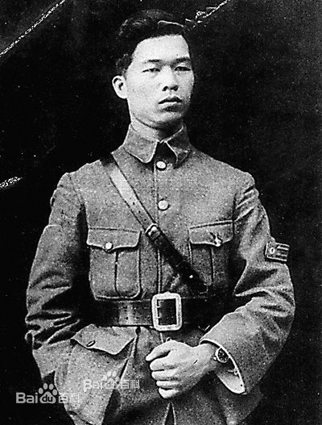

邓演达（1895年3月1日－1931年11月29日），字择生，1895年生于广东惠阳永湖乡（今惠州市惠城区三栋镇），原籍广东程乡县丙村镇（今梅州市梅县区丙村镇）[1] ，著名的国民党左派领导人。
1909年入广东陆军小学，曾参加辛亥革命。1919年保定军校毕业。[2] 1920年后，历任粤军第一师参谋兼独立营营长、第三团团长。[2] 曾两次率兵讨伐陈炯明叛军，深得孙中山的信任和嘉许。[3]
1924年5月任黄埔军校训练部副主任，后任黄埔军校教育长。1926年1月当选为国民党候补中央执行委员。[4] 同年7月任国民革命军总政治部主任，随军北伐。[4] 历任国民党中央执行委员、中央政治委员会委员、中央军委主席团成员和中央农民部部长等。[4] 1927年“四一二政变”爆发后曾著文谴责蒋介石、汪精卫，并与宋庆龄等展开反蒋活动。[4]
1931年8月在上海被捕，11月29日晚被秘密处决于南京麟麒门外沙子岗，年36岁
第一次国共合作时，邓演达拥护孙中山与共产党合作改组国民党，
邓演达
邓演达
制定“联俄、联共、扶助农工”三大政策，并在所部第三团首先接受新的政治训练，积极协助孙中山创办黄埔军校，先后任训练部副主任兼学生总队长、教育长等职。
1926年3月，蒋介石制造“中山舰事件”作为反共借口，邓演达挺身斥蒋失去革命立场，劝其立即停止军事行动，遂遭蒋排斥，被调离黄埔军校。
1926年7月，广东国民政府出师北伐，邓演达任国民革命军总司令部政治部主任。北伐途中，除领导政治工作外还兼军事指挥。攻克武昌后，兼任湖北省政务委员会主任。国民革命军总司令部移驻南昌后，又兼任总司令部武汉行营主任。
1927年2月，邓演达同徐谦、吴玉章、黄琪翔等5人在武汉组成行动委员会，与搞分裂活动的蒋介石进行斗争。3月，在国民党二届三中全会上当选为中央执行委员、中央政治委员会委员、中央军委会主席团成员和中央农民部长，并重新任军事委员会总政治部主任。在他的建议下，中央成立了土地问题委员会；他与毛泽东一起在武昌举办了中央农民运动讲习所。这时，邓演达已成为著名的国民党左派领袖人物。蒋介石发动“四·一二”反革命政变后，通缉邓演达。4月17日，邓演达和宋庆龄、毛泽东等联合发表《讨蒋通电》，声讨蒋介石反共反人民的罪行。4月23日，邓演达主持了在武汉举行的30多万人参加的群众大会，谴责蒋介石政变、残杀工农群众的罪恶活动。当汪精卫准备叛变时，邓演达多次与汪斗争。当他感到大革命的失败已无可挽回、自己必须和汪划清界线时，于6月30日写了《告别中国国民党的同志们》的告别书，严厉谴责汪精卫的反革命叛变行径，随即辞职去苏联。11月1日，他在莫斯科与宋庆龄、陈友仁发表了《对中国及世界革命民众宣言》，明确阐述了三民主义的意义，提出组织“中国国民党临时行动委员会”，继续与新、旧军阀作斗争。以后，赴欧、亚十几个国家游历考察，寻求中国革命的道路。
邓演达与辛亥革命
谨以此文纪念辛亥革命100周年，邓演达烈士殉难80周年！——樊振
19世纪后半期，中国社会积贫积弱的现状同西方国家的富国强兵，形成了十分鲜明的对照。当孙中山改良的愿望落空后，他奔走于海内外，为革命而呼号，“亟拯斯民于水火，切扶大厦之将倾”。1911年辛亥革命的炮火终于划破清王朝黑暗沉寂的夜空，结束了在中国延续几千年的君主专制，为中国的进步打开了闸门。
邓演达，字择生，1895年3月1日生于广东省惠阳县永湖乡（今惠城区三栋镇，100周年时为1995年，所以当时是惠阳县还未建市）鹿颈村，1931年11月29日夜被秘密杀害于南京，年仅36岁。是民主革命时期杰出的军事家和政治家，辛亥革命元勋，中国农工民主党创始人。他追随孙中山在奠定广东革命根据地中起过重大作用。孙中山曾说：“干革命，有两达（按：指邓演达，张民达），革命有希望。”足见孙中山先生对他的赏识和器重。
少年时代的邓演达耳濡目染中国外受帝国主义的野蛮侵略，内受清封建王朝的残酷压迫和剥削，人民陷于水深火热之中的痛苦。从小就萌生了立志学习军事，做一个出色的为中华民族服务的军人以报效国家的愿望。
1907年，孙中山领导的惠州七女湖起义使他受到了更大的激励。1909年，14岁的邓演达先生即考入广东黄埔陆军小学，编为第四期学生。由于他年龄最小，但学习成绩最好，聪颖过人，在同学中有“铁汉”之称，为校长邓铿（字仲元）所赏识，并被吸收为同盟会员，宣誓时还打了手印。当时全校同盟会的革命党员只有20多人，各期学生都有一位党务主持人。邓演达这一时期的同盟会员有郭冠杰、肖冠英、廖尚果、陈济棠等人。有一次邓仲元对其同乡学生廖尚果说，要多努力，争取得个第一名，为惠州人争光。廖回答说：争取第一名自有邓演达，轮不到我，不找这个麻烦。参加同盟会后，他们经常传阅秘密的宣传刊物，受到很大的教育。每逢节假日，又经常集结在一起，到黄埔郊外活动，议论国家大事，在革命大潮中，逐步树立起革命的人生观。
当时，同盟会干部姚雨平负责广州附近军事学校和巡防营的组织发展工作，经常需要与各地同盟会组织进行联络。清官府因广东新军和巡防营不稳，风声鹤唳，故而对出入军中的人员有盘问搜查。邓演达聪明机警，个子矮，“以年幼，长随姚雨平辈作交通员，往来于广州佛山间”，不易引起清兵的怀疑，“所有一切秘密函件，皆由先生一人经手传达，机密而且迅速，故一般革命党员皆亟加称许。”
1910年，广州庚戌新军起义，由于事起仓促而失败，清军到处捉拿革命志士。在白色恐怖中，邓演达、郭冠杰等“陆小”学生身着军服，佩戴校徽、臂章，秘密携带宣传标语，避开军警，由黄浦进城，四处散发传单。反清宣传品的出现，使清廷官吏触目惊心，激发了人民反清的斗志。
1911年4月27日下午，黄花岗起义的枪声震撼着黄埔陆军小学的每个角落。陆军小学的同盟会会员本来受命于4月29日配合起义，因提前起义失败，未及执行命令。10月10日，武昌起义爆发，14个省市立即响应，宣告独立。广东陆军小学堂也成立了革命军，邓演达与郭冠杰等人，被派往汕头。住在致安街长发祥客栈待命，随后参加姚雨平领导的韩江第四军。邓演达等人到了汕头之后，与当地义军会和，分三路分别进攻警察局、水巡局和炮台。清朝官兵闻风而逃，未及交锋就缴获一百多支枪。潮汕之役胜利后，成立了以革命党人为主体的广东军政府。“陆小”的学生军从潮汕回到广州，邓铿派邓演达到黄顺和统领的民军当教官，把民军训练成正规的革命军。16岁的邓演达当教官，在革命军中成为佳话。